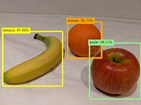

Microsoft Azure Fundamentals Certification

The Microsoft Azure AI Fundamentals Certification (AI-900) ...
At a Glance
At a Glance
- Introduction
- Model 1 - Describe AI workloads and considerations
- Model 2 - Describe fundamental principles of machine learning
- Model 3 - Describe features of computer vision workloads
- Model 4 - Describe features of Natural Language Processing (NLP) workloads
- Model 5 - features of conversational AI workloads
- Prepare for the Exam
Introduction
Skills to be measured
- Describe AI workloads and considerations (15-20%)
- Describe fundamental principles of machine learning on Azure (30-35%)
- Describe features of computer vision workloads on Azure (15-20%)
- Describe features of Natural Language Processing (NLP) workloads on Azure (15-20%)
- Describe features of conversational AI workloads on Azure (15-20%)
Module 1 - Describe AI workloads and considerations
Artificial Intelligence or AI is a software that imitates human behaviors and capabilities, such as
- Machine learning - is the foundation of AI which is to teach a computer model to make prediction and draw conclusions from data
- Anomaly detection - the capability to automatically detect errors or unusual activity
- Computer vision - the capability to interpret the world visually through cameras, video, and images
- Natural language processing - the capability to interpret and respond to written or spoken language
- Knowledge mining - the capability to extract information from large volumes of data to create a searchable knowledge store.
Azure Machine Learning Services
is a cloud-based platform for creating, managing, and publishing machine learning models
| Feature | Capability |
|---|---|
| Automated machine learning | enables non-experts to quickly create an effective machine learning model from data |
| Azure Machine Learning designer | a graphical interface enabling no-code development of machine learning solutions |
| Data and compute management | cloud-based data storage and compute resources to run data experiment code |
| Pipelines | a tool to orchestrate model training, deployment, and management tasks |
Anomaly Detection
is a machine learning based technique that analyzes data over time and identifies unusual changes
Microsoft Azure Anomaly Detector service provides an application programming interface (API) to create anomaly detection solutions
Computer Vision
are based on machine learning models that can be applied to visual input from cameras, videos, or images
| Task | Capability |
|---|---|
| Image classification | classify (whole) images based on their contents |
| Object detection | classify individual objects within an image, and identify their location with a bounding box |
| Semantic segmentation | classify individual pixels in the image (mask) according to the object they belong |
| Image analysis | a technique to extract information from images, and create "tags" for the image or descriptive captions to summarize the scene shown in the image |
| Face detection, analysis, and recognition | detect human faces in an image to classify and analyse the details of a person such as age and emotional state |
| Optical character recognition (OCR) | detect and read text in images |
Microsoft Azure services to create computer vision solutions
| Service | Capability |
|---|---|
| Computer Vision | analyze images and video, and extract descriptions, tags, objects, and text |
| Custom Vision | train custom image classification and object detection models using your own images |
| Face | build face detection and facial recognition solutions |
| Form Recognizer | extract information from scanned forms and invoices |
Natural Language Processing
NLP can:
- Analyze and interpret text in documents, email messages, and other sources
- Interpret spoken language, and synthesize speech responses
- Automatically translate spoken or written phrases between languages
- Interpret commands and determine appropriate actions
Microsoft Azure services to create natural language processing solutions
| Service | Capability |
|---|---|
| Language | a service to access features for understanding and analyzing text to understand spoken or text-based commands |
| Translator | a service to translate text between more than 60 languages |
| Speech | a service to recognize and synthesize speech, and to translate spoken languages |
| Azure Bot | a platform for conversational AI tha have the capability allow the software to participate in a conversation |
Knowledge Mining
is to extract information from large volumes of often unstructured data to create a searchable knowledge store
Azure Cognitive Search a service for building indexes that can be used for searchable contents. It can be used as a built-in AI capabilities of Azure Cognitive Services such as image processing, content extraction, and natural language processing to perform knowledge mining of documents.
Challenges and Risk with AI
| Challenge or Risk | Example |
|---|---|
| Bias can affect results | A loan-approval model discriminates by gender due to bias in the data with which it was trained |
| Errors may cause harm | An autonomous vehicle experiences a system failure and causes a collision |
| Data could be exposed | A medical diagnostic bot is trained using sensitive patient data, which is stored insecurely |
| Solutions may not work for everyone | A home automation assistant provides no audio output for visually impaired users |
| Users must trust a complex system | An AI-based financial tool makes investment recommendations - what are they based on? |
| Who's liable for AI-driven decisions | An innocent person is convicted of a crime based on evidence from facial recognition who's responsible? |
Responsible AI
a guideline of a set of 6 principles, to avoid AI applications from unintended negative consequences
- Fairness - make predictions without any bias such as based on gender, ethnicity, or other factors
- Reliability and safety - the AI system must go through rigorous testing and approval before it can be in use
- Privacy and security - AI system must be secure, and it must respect the privacy of individuals
- Inclusiveness - engage and empower people from wide aspects of society
- Transparency - users should be made aware of the purpose of the system, its working protocols, and processes, and its expected limitations
- Accountability - developers of AI-based solution should work within a framework of governance and organizational principles that ensure it meets ethical and legal standards.
Model 2 - Describe fundamental principles of machine learning
Machine Learning is a technique that uses mathematics and statistics to create a model that can predict unknown values
Regression Model
Regression is a form of machine learning that is used to predict a numeric label based on an item's features. Regression is an example of a supervised machine learning technique in which you train a model using data that includes both the features and known values for the label, so that the model learns to fit the feature combinations to the label.
Normalize Data: transform the numeric values so that the values are all on a similar scale Splitting data: into two sets enables you to compare the labels that the model predicts with the actual known labels in the original dataset.
Evaluate Model
- Mean Absolute Error (MAE): The average difference between predicted values and true values. This value is based on the same units as the label, in this case dollars. The lower this value is, the better the model is predicting.
- Root Mean Squared Error (RMSE): The square root of the mean squared difference between predicted and true values. The result is a metric based on the same unit as the label (dollars). When compared to the MAE (above), a larger difference indicates greater variance in the individual errors (for example, with some errors being very small, while others are large).
- Relative Squared Error (RSE): A relative metric between 0 and 1 based on the square of the differences between predicted and true values. The closer to 0 this metric is, the better the model is performing. Because this metric is relative, it can be used to compare models where the labels are in different units.
- Relative Absolute Error (RAE): A relative metric between 0 and 1 based on the absolute differences between predicted and true values. The closer to 0 this metric is, the better the model is performing. Like RSE, this metric can be used to compare models where the labels are in different units.
- Coefficient of Determination (R2): This metric is more commonly referred to as R-Squared, and summarizes how much of the variance between predicted and true values is explained by the model. The closer to 1 this value is, the better the model is performing.
Classification
Classification is a form of machine learning that is used to predict which category, or class, an item belongs to. Classification is an example of a supervised machine learning technique in which you train a model using data that includes both the features and known values for the label, so that the model learns to fit the feature combinations to the label.
Evaluate Model
- Confusion Metrix:
- Accuracy: The ratio of correct predictions (true positives + true negatives) to the total number of predictions.
- Precision: The fraction of positive cases correctly identified (the number of true positives divided by the number of true positives plus false positives).
- Recall: The fraction of the cases classified as positive that are actually positive (the number of true positives divided by the number of true positives plus false negatives).
- F1 Score*: An overall metric that essentially combines precision and recall**.
- Receiver Operating Characteristic (ROC curve): Another term for recall is True positive rate, and it has a corresponding metric named False positive rate, which measures the number of negative cases incorrectly identified as positive compared the number of actual negative cases. The larger the area under the curve (which can be any value from 0 to 1), the better the model is performing
- Area Under the Curve (AUC): is a term to describe the area under the ROC curve. The area under the diagonal line represents an AUC of 0.5 means that you get around half of them right. If the AUC for your model is higher than this for a binary classification model, then the model performs better than a random guess.
Clustering
Clustering is a form of machine learning that is used to group similar items into clusters based on their features. Clustering is an example of unsupervised machine learning, in which you train a model to separate items into clusters based purely on their characteristics, or features.
Evaluate Model
- Average Distance to Other Center: This indicates how close, on average, each point in the cluster is to the centroids of all other clusters.
- Average Distance to Cluster Center: This indicates how close, on average, each point in the cluster is to the centroid of the cluster.
- Number of Points: The number of points assigned to the cluster.
- Maximal Distance to Cluster Center: The maximum of the distances between each point and the centroid of that points cluster. If this number is high, the cluster may be widely dispersed. This statistic in combination with the Average Distance to Cluster Center helps you determine the clusters spread.
Model 3 -
Analyze images with Computer Vision service
Creating solutions that enable AI applications to see the world and make sense of it.
Some potential uses for computer vision include:
- Content Organization: Identify people or objects in photos and organize them based on that identification. Photo recognition applications like this are commonly used in photo storage and social media applications.
- Text Extraction: Analyze images and PDF documents that contain text and extract the text into a structured format.
- Spatial Analysis: Identify people or objects, such as cars, in a space and map their movement within that space.
Azure resources for Computer Vision
Computer Vision service can be used and created as a resource in an Azure subscription. The following services type can be used for computer vision:
- Computer Vision: A specific resource for the Computer Vision service. Use this resource type if you don't intend to use any other cognitive services, or if you want to track utilization and costs for your Computer Vision resource separately.
- Cognitive Services: A general cognitive services resource that includes Computer Vision along with many other cognitive services; such as Text Analytics, Translator Text, and others. Use this resource type if you plan to use multiple cognitive services and want to simplify administration and development.
Whichever type of resource you choose to create, it will provide two pieces of information:
- A key that is used to authenticate client applications.
- An endpoint that provides the HTTP address at which your resource can be accessed.
Analyzing images with Computer Vision service
Computer Vision service can perform a wide range of analytical tasks as following
- Describing an image - analyze an image, evaluate the objects that are detected, and generate a human-readable phrase or sentence that can describe what was detected in the image.
- Tagging visual features - can be used to suggest tags for the image.
- Detecting objects - identify common objects and return what is known as bounding box coordinates
- Detecting brands - identify commercial brands and returns a response (if any) that contains the brand name, a confidence score (from 0 to 1 indicating how positive the identification is), and a bounding box (coordinates)
- Detecting faces - detect and analyze human faces in an image, including the ability to determine age and a bounding box rectangle for the location of the face(s) using such as the Face Service
- Categorizing an image - categorize images based on their content
- Detecting domain-specific content - categorizing an image into two specialized domain models (1) Celebrities and (2) Landmarks
- Optical character recognition (OCR) - capabilities to detect printed and handwritten text in images.
- Detect image types - for example, identifying clip art images or line drawings.
- Detect image color schemes - specifically, identifying the dominant foreground, background, and overall colors in an image.
- Generate thumbnails - creating small versions of images.
- Moderate content - detecting images that contain adult content or depict violent, gory scenes.
Classify images with the Custom Vision service
AI systems to identify real-world items based on images. Some potential uses for image classification include:
- Product identification: performing visual searches for specific products in online searches or even, in-store using a mobile device.
- Disaster investigation: identifying key infrastructure for major disaster preparation efforts. For example, identifying bridges and roads in aerial images can help disaster relief teams plan ahead in regions that are not well mapped.
- Medical diagnosis: evaluating images from X-ray or MRI devices could quickly classify specific issues found as cancerous tumors, or many other medical conditions related to medical imaging diagnosis.
Azure resources for Custom Vision
use the following types of resource:
Custom Vision: A dedicated resource for the custom vision service, which can be training, a prediction, or both resources. Cognitive Services: A general cognitive services resource that includes Custom Vision along with many other cognitive services. You can use this type of resource for training, prediction, or both.
Model Evaluation
- Precision: What percentage of the class predictions made by the model were correct? For example, if the model predicted that 10 images are oranges, of which eight were actually oranges, then the precision is 0.8 (80%).
- Recall: What percentage of class predictions did the model correctly identify? For example, if there are 10 images of apples, and the model found 7 of them, then the recall is 0.7 (70%).
- Average Precision (AP) (sometimes Mean Average Precision or mAP): An overall metric that takes into account both precision and recall.
Using the model for prediction
After being satisfied with its evaluated performance, the model can be used for prediction. The model need to be published and assigned a name (the default is "IterationX", where X is the number of times the model has been trained). To use the model, client application developers need the following information:
- Project ID: The unique ID of the Custom Vision project of the trained the model
- Model name: The name of the model during publishing
- Prediction endpoint: The HTTP address of the endpoints for the prediction resource (not the training resource)
- Prediction key: The authentication key for the prediction resource (not the training resource)
Detect objects in images with the Custom Vision service
Object Detection is a form of machine learning based computer vision in which a model is trained to recognize individual types of objects in an image
An object detection model can be used to identify the individual objects in an image and return the following information:
 * The class of each object identified in the image. * The probability score of the object classification (which you can interpret as the confidence of the predicted class being correct) * The coordinates of a bounding box for each object.
Detect and analyze faces with the Face service
Face detection and analysis is an area of artificial intelligence (AI) in which we use algorithms to locate and analyze human faces in images or video content
Face detection
Face detection involves identifying regions of an image that contain a human face, typically by returning bounding box coordinates that form a rectangle around the face
Facial analysis
Use facial landmarks as features with which to train a machine learning model from which can infer information about a person, such as their perceived age or perceived emotional state.
Facial recognition
To identify known individuals from their facial features by using multiple images of each person you want to recognize to train a model so that it can detect those individuals in new images on which it wasn't trained.
Read text with the Computer Vision service
The ability to extract text from images.
- Optical Character Recognition (OCR) is a model can be trained to recognize individual shapes as letters, numerals, punctuation, or other elements of text.
- Machine Reading Comprehension (MRC) an AI system to read the text characters and use a semantic model to interpret what the text is about.
OCR API
The OCR API is designed for quick extraction of small amounts of text in images. It operates synchronously to provide immediate results, and can recognize text in numerous languages. It operates synchronously to provide immediate results, and can recognize text in numerous languages.
The OCR method can have issues with false positives when the image is considered text-dominate.
OCR API returns a hierarchy of information that consists of:
- Regions in the image that contain text
- Lines of text in each region
- Words in each line of text
For each of these elements, the OCR API also returns bounding box coordinates that define a rectangle to indicate the location in the image where the region, line, or word appears.
Read API
The Read API is for scanned documents that have a lot of text. It works asynchronously so as not to block your application while it is reading the content and returning results to your application.
- Pages - One for each page of text, including information about the page size and orientation.
- Lines - The lines of text on a page.
- Words - The words in a line of text.
Each line and word includes bounding box coordinates indicating its position on the page.
Form Recognizer Service
The Form Recognizer be used to automate the processing of data in documents such as forms, invoices, and receipts using OCR with predictive models to interpret form data by:
- Matching field names to values.
- Processing tables of data.
- Identifying specific types of field, such as dates, telephone numbers, addresses, totals, and others.
Form Recognizer supports automated document processing through:
- A pre-built receipt model that is provided out-of-the-box, and is trained to recognize and extract data from sales receipts.
- Custom models, extract as key/value pairs and table data from forms. Trained using your own data, to tailor the model to a specific forms.
Azure resources to access Form Recognizer services
- Form Recognizer
- Cognitive Services
Using the pre-built receipt model
Currently, the pre-built receipt model is designed to recognize common receipts, in English, that are common to the USA.
To get the best results when using a custom model. * Images must be JPEG, PNG, BMP, PDF, or TIFF formats * File size must be less than 50 MB * Image size between 50 x 50 pixels and 10000 x 10000 pixels * For PDF documents, no larger than 17 inches x 17 inches
Model 4 - (NOT CLEANED)
Natural Language Processing (NOT CLEANED)
Analyzing text is a process to evaluate different aspects of a document or phrase, to gain insights into the content of that text.
Text Analytics Techniques (NOT CLEANED)
There are some commonly used techniques that can be used to build software to analyze text, including:
- Statistical analysis of terms used in the text. For example, removing common "stop words" (words like "the" or "a", which reveal little semantic information about the text), and performing frequency analysis of the remaining words (counting how often each word appears) can provide clues about the main subject of the text.
- Extending frequency analysis to multi-term phrases, commonly known as N-grams (a two-word phrase is a bi-gram, a three-word phrase is a tri-gram, and so on).
- Applying stemming or lemmatization algorithms to normalize words before counting them - for example, so that words like "power", "powered", and "powerful" are interpreted as being the same word.
- Applying linguistic structure rules to analyze sentences - for example, breaking down sentences into tree-like structures such as a noun phrase, which itself contains nouns, verbs, adjectives, and so on.
- Encoding words or terms as numeric features that can be used to train a machine learning model. For example, to classify a text document based on the terms it contains. This technique is often used to perform sentiment analysis, in which a document is classified as positive or negative.
- Creating vectorized models that capture semantic relationships between words by assigning them to locations in n-dimensional space. This modeling technique might, for example, assign values to the words "flower" and "plant" that locate them close to one another, while "skateboard" might be given a value that positions it much further away.
Azure resources for the Language service (NOT CLEANED)
- Language resource - choose this resource type if you only plan to use natural language processing services, or if you want to manage access and billing for the resource separately from other services.
- Cognitive Services resource - choose this resource type if you plan to use the Language service in combination with other cognitive services, and you want to manage access and billing for these services together.
Language Detection (NOT CLEANED)
Use the language detection capability of the Language service to identify the language in which text is written.
Ambiguous or mixed language content - There may be text that is ambiguous in nature, or that has mixed language content. These situations can present a challenge to the service. An ambiguous content example would be a case where the document contains limited text, or only punctuation. For example, using the service to analyze the text ":-)", results in a value of unknown for the language name and the language identifier, and a score of NaN (which is used to indicate not a number).
Sentiment Analysis (NOT CLEANED)
This capability is useful for detecting positive and negative sentiment in social media, customer reviews, discussion forums and more.
The service evaluates the text and returns a sentiment score in the range of 0 to 1, with values closer to 1 being a positive sentiment. Scores that are close to the middle of the range (0.5) are considered neutral or indeterminate.
Indeterminate sentiment - A score of 0.5 might indicate that the sentiment of the text is indeterminate, and could result from text that does not have sufficient context to discern a sentiment or insufficient phrasing. For example, a list of words in a sentence that has no structure, could result in an indeterminate score. Another example where a score may be 0.5 is in the case where the wrong language code was used. A language code (such as "en" for English, or "fr" for French) is used to inform the service which language the text is in. If you pass text in French but tell the service the language code is en for English, the service will return a score of precisely 0.5.
Key phrase extraction (NOT CLEANED)
Key phrase extraction is the concept of evaluating the text of a document, or documents, and then identifying the main talking points of the document(s).
Entity recognition (NOT CLEANED)
You can provide the Language service with unstructured text and it will return a list of entities in the text that it recognizes. The service can also provide links to more information about that entity on the web. An entity is essentially an item of a particular type or a category; and in some cases, subtype,
Recognize and synthesize speech
Is an artificial intelligence (AI) solutions to accept vocal commands and provide spoken responses.
To enable this kind of interaction, the AI system must support two capabilities:
- Speech recognition - the ability to detect and interpret spoken input (speech to text)
- Speech synthesis - the ability to generate spoken output (text to speech)
Speech recognition
Typically, uses those types of models:
- Acoustic model to convert the audio signal into phonemes (representations of specific sounds)
- Language model to maps phonemes to words, usually using a statistical algorithm that predicts the most probable sequence of words based on the phonemes
The converted text can be used in such as:
- Providing closed captions for recorded or live videos
- Creating a transcript of a phone call or meeting
- Automated note dictation
- Determining user input for further processing
Speech synthesis
To synthesize speech, the system typically tokenizes the text to break it down into individual words, and assigns phonetic sounds to each word. It then breaks the phonetic transcription into prosodic units (such as phrases, clauses, or sentences) to create phonemes that will be converted to audio format.
The Output of speech synthesis can be used in:
- Generating spoken responses to user input
- Creating voice menus for telephone systems
- Reading email or text messages aloud in hands-free scenarios
- Broadcasting announcements in public locations, such as railway stations or airports
Azure resources for the Speech service
Microsoft Azure offers both speech recognition and speech synthesis capabilities through:
-
The Speech-to-Text API - is based on the Universal Language Model. The model is optimized for two scenarios, conversational and dictation
- Real-time transcription - transcribe text in audio streams. Use real-time transcription for presentations, demos, or any other scenario where a person is speaking.
- Batch transcription - to transcribe non-real-time audio recordings stored on a file share, a remote server, or even on Azure storage. Batch transcription should be run in an asynchronous* manner because the batch jobs are scheduled on a best-effort basis**.
-
The Text-to-Speech API - convert text input to audible speech
- Speech synthesis voices - specify the voice to be used to vocalize the text, including standard voices or neural voices (more natural sounding voice)
To use the Speech service in an application, users must create an appropriate resource in your Azure subscription either of the following types of resource:
- A Speech resource - only to use the Speech service, or to manage access and billing for the resource separately from other services
- A Cognitive Services resource - to use the Speech service in combination with other cognitive services, and to manage access and billing for these services together
Translate text and speech
Is to use AI for language translations, sometimes known as machine translation
Literal and semantic translation
To translate words to the corresponding word in the target language including the accurate semantic context
Text and speech translation
- Text translation can be used to translate documents from one language to another, translate email communications that come from foreign governments, and even provide the ability to translate web pages on the Internet.
- Speech translation is used to translate between spoken languages, sometimes directly (speech-to-speech translation) and sometimes by translating to an intermediary text format (speech-to-text translation).
Azure resources for translation
Microsoft Azure provides cognitive services that support translation with the following services:
-
The Translator service - supports text-to-text translation
- The service uses a Neural Machine Translation (NMT) model for translation, which analyzes the semantic context of the text and renders a more accurate and complete translation as a result.
- Supports text-to-text translation in more than 60 languages
- Optional Configurations: Profanity filtering translate without any configuration, Selective translation tag content that not to translated
-
The Speech service - enables speech-to-text and speech-to-speech translation
- Speech-to-text - transcribe speech from an audio source to text format
- Text-to-speech - generate spoken audio from a text source
- Speech Translation - translate speech in one language to text or speech in another
- Translate speech into over 60 languages
Conversational Language Understanding
is to be able to interpret the semantic meaning of the input (understand what is being said). Conversational language understanding is supported through the Language Service which need to take into account three core concepts:
| Utterances | Entities | Intents | |
|---|---|---|---|
| definition | Something a user might say. Can be a sentence or words. It consists with an entity and intent | An item to which an utterance refers for determine a command | represents the purpose, or goal, expressed in a user's utterance. Can be understand as what the user want |
| example | Switch the fan on. Turn off the light. |
Switch the fan on. (Fan is an entity) Turn off the light. (light is an entity) |
Switch the fan on. (TurnON is an intent) Turn the light off. (TurnOff is an intent) |
NOTE
Of special interest is the None intent. Always consider using the None intent to help handle utterances that do not match any of the utterances you have entered. The None intent is considered a fallback, and is typically used to provide a generic response to users when their requests don't match any other intent.
Azure resources for Conversational Language Understanding
| Language Service | Cognitive Services | |
|---|---|---|
| definition | to build apps with natural language understanding capabilities | is a general cognitive services resource that includes Conversational Language Understanding along with many other cognitive services. You can only use this type of resource for prediction |
| implementation | want to track resource utilization for Language Service use separately from client applications | manage access to all of the cognitive services being used, including the Language Service, through a single endpoint and key. |
Authoring
is to define the resources to author and train a Conversational Language Understanding application by defining the entities and intents as well as utterances.
Creating intents
Define intents based on actions a user would want to perform with your application. For each intent, you should include a variety of utterances that provide examples of how a user might express the intent.
Creating entities
- Machine-Learned - Entities that are learned by your model during training from context in the sample utterances you provide.
- List - Entities that are defined as a hierarchy of lists and sublists. For example, a device list might include sublists for light and fan. For each list entry, you can specify synonyms, such as lamp for light.
- RegEx - Entities that are defined as a regular expression that describes a pattern - for example, you might define a pattern like [0-9]{3}-[0-9]{3}-[0-9]{4} for telephone numbers of the form 555-123-4567.
- Pattern.any* - Entities that are used with patterns** to define complex entities that may be hard to extract from sample utterances.
Training the model
Training is the process of using the sample utterances to teach the model to match natural language expressions that a user might say to probable intents and entities.
Predicting
When satisfied with the results from the training and testing, the model can be published to a Conversational Language Understanding application to a prediction resource for consumption.
Client applications can use the model by connecting to the endpoint for the prediction resource, specifying the appropriate authentication key; and submit user input to get predicted intents and entities. The predictions are returned to the client application, which can then take appropriate action based on the predicted intent.
Build a bot with Language Service and Azure Bot Service
This section is an example to create a chatbot for frequently asked questions (FAQ) using Language Service and Azure Bot Service based on existing FAQ documentation To implement this kind of solution, it is needed to have:
- A knowledge base of question and answer pairs - usually with some built-in natural language processing model to enable questions that can be phrased in multiple ways to be understood with the same semantic meaning.
- A bot service that provides an interface to the knowledge base through one or more channels.
To creating a bot solution on Microsoft Azure, can be done with the use of the following core services
- The Language service using a custom question answering feature that enables you to create a knowledge base of question and answer pairs that can be queried using natural language input.
- Azure Bot service a service provides a framework for developing, publishing, and managing bots on Azure.
???* Note The question answering capability in the Language service is a newer version of the QnA Maker service - which is still available as a separate service.
- Create a custom question answering knowledge base - by using Language Studio's question answering feature to create, train, publish, and manage knowledge bases. 1.1 Provision a Language service Azure resource in an Azure subscription 1.2 Define questions and answer by using Language Studio's custom question answering feature to create a knowledge base 1.3 Test the knowledge base by submitting questions and reviewing the answers 1.4 Use (deploy) the knowledge base
- Build a bot with the Azure Bot Service 2.1 Create a bot for the knowledge base using the Microsoft Bot Framework SDK to write code that controls conversation flow and integrates with your knowledge base 2.2 Extend and configure the bot 2.3 Connect channels and making it possible for users to interact with the bot
Anomaly Detection
Anomalies* are values that are outside the expected values or range** of values.
Is a technique to determine whether values in a series are within expected parameters.
Anomaly Detector is a part of the Decision Services category within Azure Cognitive Services.
The main parameter you need to customize is Sensitivity, which is from 1 to 99 to adjust the outcome to fit the scenario. The service can detect anomalies in historical time series data and also in real-time data such as streaming input from IoT devices, sensors, or other streaming input sources.
How Anomaly Detector works
The Anomaly Detector service identifies anomalies that exist outside the scope of a boundary. By default, the upper and lower boundaries for anomaly detection are calculated using concepts known as expectedValue, upperMargin, and lowerMargin. The boundaries can be adjusted by applying a marginScale to the upper and lower margins as demonstrated by the following formula.
upperBoundary = expectedValue + (100 - marginScale) * upperMargin
Data format
The Anomaly Detector service accepts data in JSON format. The service will support a maximum of 8640 data points.
Data consistency recommendations
- If the sampling occurs every few minutes and has less than 10% of the expected number of points missing. In this case, the impact should be negligible on the detection results.
- If you have more than 10% missing, there are options to help "fill" the data set. Consider using a linear interpolation method to fill in the missing values and complete the data set. This will fill gaps with evenly distributed values.
Batch detection
Batch detection involves applying the algorithm to an entire data series at one time. Batch detection is best used when your data contains:
- Flat trend time series data with occasional spikes or dips
-
Seasonal time series data with occasional anomalies
- Seasonality is considered to be a pattern in your data, that occurs at regular intervals.
Real-time detection
Real-time detection uses streaming data by comparing previously seen data points to the last data point to determine if your latest one is an anomaly.
Explore knowledge mining
Knowledge mining is the term used to describe solutions that involve extracting information from large volumes of often unstructured data.
Azure Cognitive Search
Azure Cognitive Search provides the infrastructure and tools to create search solutions that extract data from a variety of structured, semi-structured, and non-structured documents. It's a Platform as a Service (PaaS) solution
Azure Cognitive Search features
It is a highly available platform offering a 99.9% uptime SLA available for cloud and on-premises assets. Comes with the following features:
- Data from any source: accepts data from any source provided in JSON format, with auto crawling support for selected data sources in Azure.
- Full text search and analysis: offers full text search capabilities supporting both simple query and full Lucene query syntax.
- AI powered search: has Cognitive AI capabilities built in for image and text analysis from raw content.
- Multi-lingual: linguistic analysis for 56 languages to intelligently handle phonetic matching or language-specific linguistics.
- Geo-enabled: supports geo-search filtering based on proximity to a physical location.
- Configurable user experience: several features to improve the user experience including autocomplete, autosuggest, pagination, and hit highlighting.
Built in skills
Built-in skills are based on pre-trained models from Microsoft, which means users can't train the model using their own training data. Built-in skills fall into these categories:
-
Natural language processing skills: with these skills, unstructured text is mapped as searchable and filterable fields in an index. Some examples include:
- Key Phrase Extraction: uses a pre-trained model to detect important phrases based on term placement, linguistic rules, proximity to other terms, and how unusual the term is within the source data.
- Text Translation Skill: uses a pre-trained model to translate the input text into a variety of languages for normalization or localization use cases.
-
Image processing skills: creates text representations of image content, making it searchable using the query capabilities of Azure Cognitive Search. Some examples include:
- Image Analysis Skill: uses an image detection algorithm to identify the content of an image and generate a text description.
- Optical Character Recognition (OCR) Skill: allows extracting printed or handwritten text from images, such as photos of street signs and products, as well as from documentsinvoices, bills, financial reports, articles, and more.
Indexes
Index can be thought of as a container of searchable documents
- Index schema:
- Index Attribute:
Azure Indexer: to export a document from their original file type to JSON**.
- Push method: JSON data is pushed into a search index via either the REST API or the .NET SDK. Pushing data has the most flexibility as it has no restrictions on the data source type, location, or frequency of execution.
- Pull method: Search service indexers can pull data from popular Azure data sources, and if necessary, export that data into JSON if it isn't already in that format.